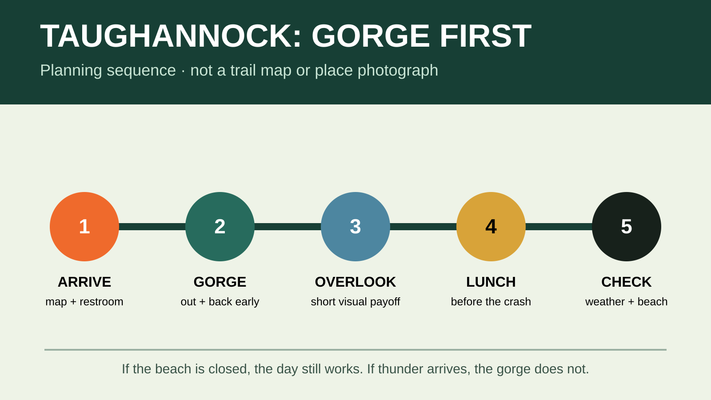

HIKING
Choose trails with a payoff
Views, water, bridges, caves and things to climb beat featureless miles every time.

OUTSIDE IS STILL OPEN
Hikes, campsites, paddles and low-pressure ways to raise kids who know what dirt feels like.
OUTDOOR KIDS
Sell the waterfall. The giant rock. The snack at the overlook. Kids rarely care about mileage; they care about what happens along the way.
Views, water, bridges, caves and things to climb beat featureless miles every time.

Start close to home, keep dinner simple and make the first trip easy to win.

Beaches, paddling, swimming holes and shoreline walks are instant family magnets.
FOUR SEASONS
NEW TRAIL SYSTEMS

Walk first, eat on time, then choose one second act with current park logistics and backups.

Three route-based loadouts, a real fit check and an honest reason to keep the pack you own.
NEW OUTDOOR SYSTEMS

Gorge first, overlook second, with the current beach closure treated like the real constraint it is.

Match rain protection to movement, exposure and the actual exit plan.
THE USEFUL STUFF
These are practical categories to compare—not a reason to overpack. Check fit, specifications and current reviews before buying.
Paid links: As an Amazon Associate I earn from qualifying purchases. You pay no additional cost.
Prioritize fit, reachable water and room for layers rather than maximum capacity.
See current options → COMPARE ON AMAZONHands-free backup light belongs in the pack even on a daytime start.
See current options → COMPARE ON AMAZONChoose a compact kit and learn what is inside before you need it.
See current options → COMPARE ON AMAZONSeparate phones, keys and dry layers from the wet side of the day.
See current options →